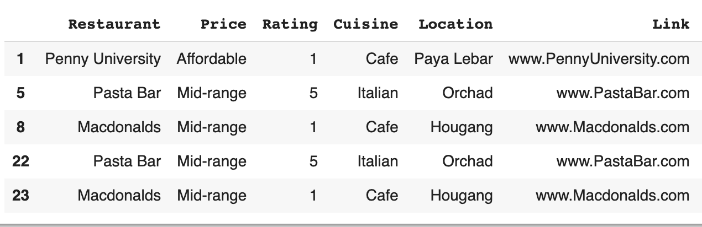
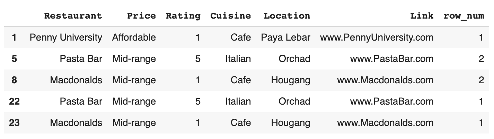
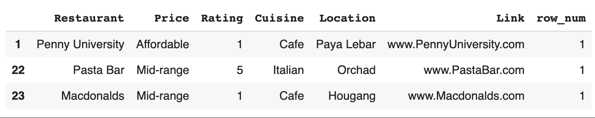

Dropping Duplicates In Postgres Table
With one well-explained SQL query!


Introduction
Hey! In this article, I will be sharing more about how I dropped duplicates in a Postgres table. I found a few articles online that simply give the code without much explanation of what is happening. As such, I am writing this article to explain the drop duplicate SQL query’s inner workings!
Content Page
Breakdown of code
This is the code I used. It might seem a little daunting, but don’t worry, we will go through them step by step.
(SELECT *
FROM
(SELECT *,
ROW_NUMBER()
OVER( PARTITION BY restaurant, price, rating, cuisine
ORDER BY price ) AS row_num
FROM public.restaurants_df ) AS table
WHERE table.row_num <= 1 )
As we can see, there is a subquery, because of the 2 “SELECT * FROM”. In order to deconstruct the code and make it easier to understand, we will start from the innermost query and proceed outwards.
(SELECT *,
ROW_NUMBER()
OVER( PARTITION BY restaurant, price, rating, cuisine
ORDER BY price ) AS row_num
FROM public.restaurants_df ) AS table
This is the inner query. We are selecting everything and the new column that is generated by the ROW_NUMBER() function. ROW_NUMBER() function assigns a sequential integer to each row in a result set. For a pictorial example, this is what is happening

initial table with duplicates
This is our initial table before the ROW_NUMBER() function.

new table with the new column row_num
As we can see, there is a new column called row_num. The default name is row_number but we named it row_num with the keyword “AS”. It is optional to do so, but naming so will help with clarity if you are doing this function multiple times in a single query where other similar columns will be created.
“OVER (PARTITION BY your_columns)” allows you to choose the columns which you want to check for duplicates. In the example, if you wish to check for duplicate restaurants only, you will partition by restaurant column only. However, if you wish to check for duplicates in restaurant, price and location, you would need to partition by all those columns only. You can also ignore the partition by clause if you want to check for duplicate entries, i.e. duplicates for all the columns. In that case, ROW_NUMBER() function considers the whole result set as a partition.
“ORDER BY” is used to arrange the database, it is optional for this query. “public.restaurant_df” is used to specifically target the table (restaurant_df) in the schema (public). There may be another table named restaurant_df in another schema and Postgres might drop duplicates in the other tables instead of the table we want. That would be disastrous!
We also rename the new table from the subquery as “table” so that it can be referenced in the other query.
(SELECT *
FROM
...
WHERE table.row_num <= 1 )
Moving a level out, we are placing a WHERE clause on the newly created table, filtering out rows where row_num is greater than 1. Rows that are greater than 1 indicate that there is a duplicate for that entry. Here is the resultant table.
table without duplicates
Finally, we are selecting everything from the newly filtered table and returning it as the output. There we go! That is the table without any duplicates.
But wait! You might notice that the changes to the table are not actually permanent. We merely returned a table without the duplicates but did not “commit” it to the actual database. Do be very careful with this dropping duplicate query because there is no retrieving the lost data after executing it.
Actual Code
DELETE FROM original_table
WHERE id IN
(SELECT id
FROM
(SELECT id,
ROW_NUMBER() OVER( PARTITION BY column_names
ORDER BY id ) AS row_num
FROM original_table ) table
WHERE table.row_num > 1 )
Don’t worry, I am not pulling your leg, this code will drop duplicates permanently this time. I just wanted to make sure you don’t accidentally drop all duplicates and mess up your data.
There are some minor changes to make to the previous code. By adding a “DELETE FROM” clause, you will be deleting the duplicates from the table where the row_num is greater than 1. Column “id” can be replaced with any column that uniquely identifies each row.
Do note, in the previous code, I used “table.row_num <= 1” to return the non-duplicate table but in this case, I used “table.row_num > 1” because we want to return the table with the duplicates so that we can delete them off.
Why Drop Duplicates At SQL Level
When I was creating new databases in my previous job as a Data Analyst, much of the data that makes up the new databases came from existing ones. Instinctively, 2 methods to transform the data come to mind. First would be Pandas dataframe methods and other is Postgres queries.
The script is run everyday and I wanted it to be as efficient as possible. Considering the amount of data getting larger and larger with each day, I was afraid that when the amount of data exceeds a certain point, the software running the script will time out and that would result in incomplete data being appended to the new table.
The xml key refers to the encoding/xml package while json refers to the encoding/json package. To pass more than 1 tag, just separate the key-value pairs with a space. To pass more than 1 value, separate the values with commas.
It is no surprise that I chose to use SQL queries instead of Pandas methods as SQL queries are much faster. No doubt, Pandas methods are way simpler to understand and use. A “df.drop_duplicates()” would suffice compared to those 7 lines of SQL code, but it is at the expense of efficiency. I am proud to say that the script runs well everyday and there hasn’t been a timeout yet!
Conclusion
I hope this in depth explanation of the SQL query was helpful and has made your script a little faster! I can’t emphasise this enough but this drop duplicate query has the potential to ruin a whole table of data if not used correctly. Do proceed with caution! I would advise to use the first code chunk to check if the returned table is what you actually want before using the second chunk of code to make the changes permanent.
How I wish Postgres had a command to do drop duplicates but I guess until then, we have to continue using that chunk of code. Stay Cool, Cucumbers!